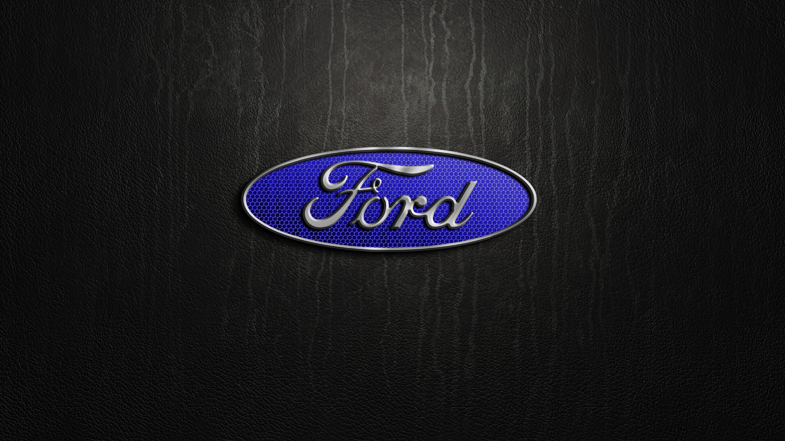
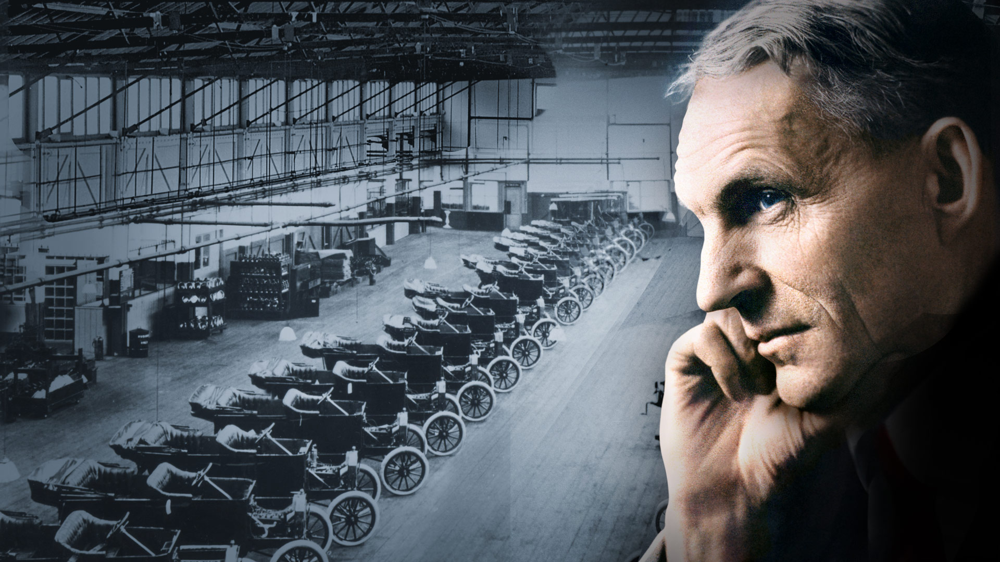

História da Ford


A Ford é uma fabricante de automóveis multinacional estadunidense
sediada em Dearborn, Michigan, um subúrbio de Detroit.
Foi fundada por Henry Ford e incorporada em 16 de junho de 1903.
Tem como objetivo é ser a empresa líder mundial na avaliação do consumidor em
produtos e serviços automotivos
A Ford é a quarta maior produtora de veículos do planeta,
um gigante com faturamento superior a US$ 128 bilhões, 164 mil empregados,
mais de 5.3 milhões de veículos vendidos em 2010 e mais de 70 fábricas,
instaladas em países como Estados Unidos, Canadá, México, Reino Unido,
Alemanha, Turquia, Brasil, Argentina, Austrália e China.
Atualmente a empresa é proprietária das marcas Lincoln,
Mazda (da qual controla 33.4%), além da brasileira Troller.
Entre os dez modelos de veículos mais vendidos do mercado americano em 2010,
a FORD detém o primeiro lugar com os caminhões leves F-SERIES e o oitavo
com o FUSION.
"Somos uma família global e diversificada, com um legado histórico do qual nos orgulhamos e estamos verdadeiramente comprometidos em oferecer produtos e serviços excepcionais, que melhorem a vida das pessoas"
"Somos uma família global e diversificada, com um legado histórico do qual nos orgulhamos e estamos verdadeiramente comprometidos em oferecer produtos e serviços excepcionais, que melhorem a vida das pessoas"